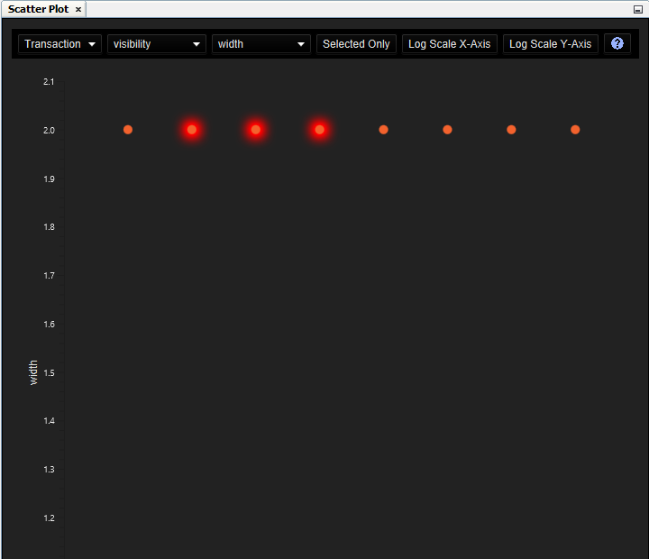

Scatter Plot
Scatter Plot Actions
| Constellation Action |
Keyboard Shortcut |
User Action |
Menu Icon |
|
Open Scatter Plot
|
Ctrl + Shift + O
|
Views -> Scatter Plot
|
|
The Scatter Plot provides an interface for comparing numerical attributes in a graph with the intention of
discovering patterns, or rather oddities within patterns in your graph.

The Scatter Plot is quite simple to use, you simply need to set values for the 6 options in the top toolbar:
- Element Type -
This determines the element type of the graph whose attributes you wish to plot.
-
X Attribute -
This is the attribute you wish to be drawn on the x-axis of the scatter plot. This will only be populated
for numerical attributes (i.e. attributes of type boolean, integer, long, float or double).
-
Y Attribute -
This is the attribute you wish to be drawn on the y-axis of the scatter plot. Likewise, this will only
be populated with numerical attributes.
-
Selected Only -
This will toggle between drawing all values on the scatter plot, or only including values which belong
to elements currently selected on the graph.
-
Log Scale X-Axis -
This will toggle between having a linear scale and a logarithmic scale on the x-axis. The logarithmic scale will
only be applied if the graph is not empty.
-
Log Scale Y-Axis -
This will toggle between having a linear scale and a logarithmic scale on the y-axis. The logarithmic scale will
only be applied if the graph is not empty.
Upon selection of these options, the Scatter Plot will automatically generate an interactive plot for you.
Selecting elements in your graph will select the corresponding elements in the Scatter Plot and vice versa.
Hovering over any element within the Scatter Plot will highlight it for you and display its name within the graph.